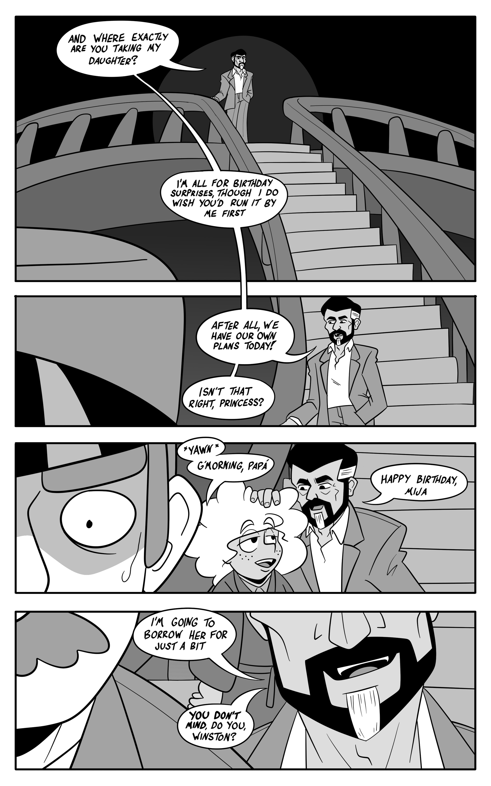
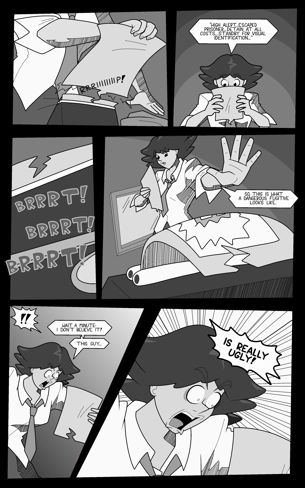
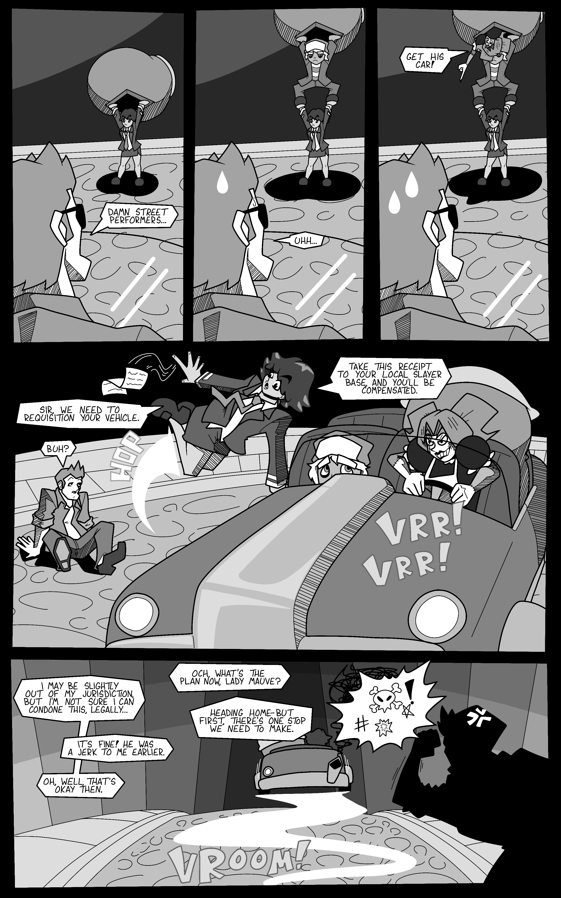
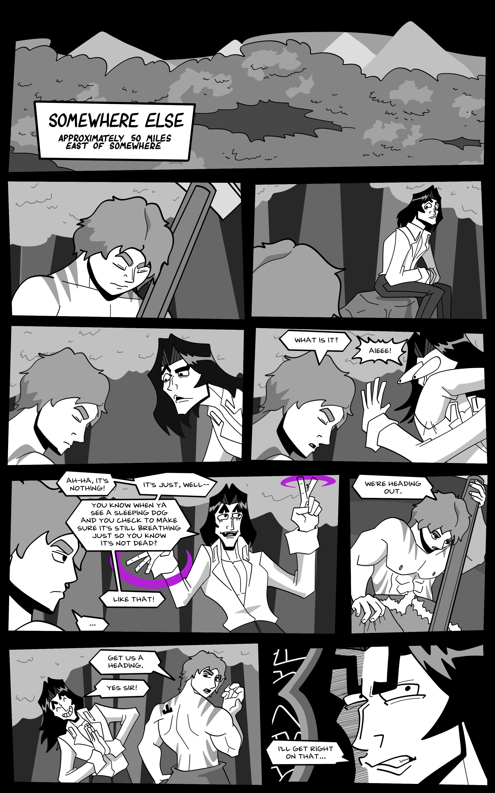
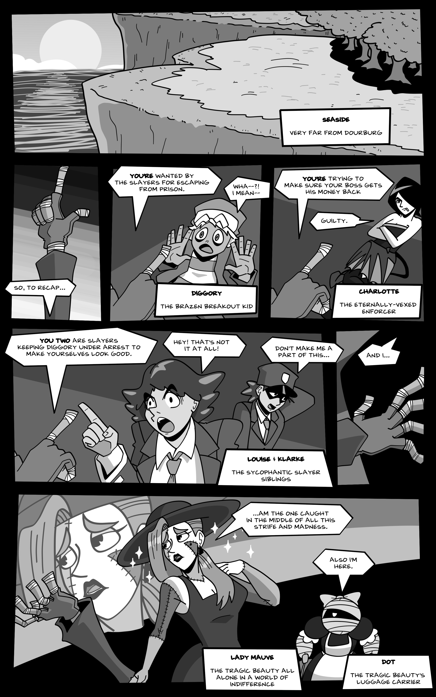
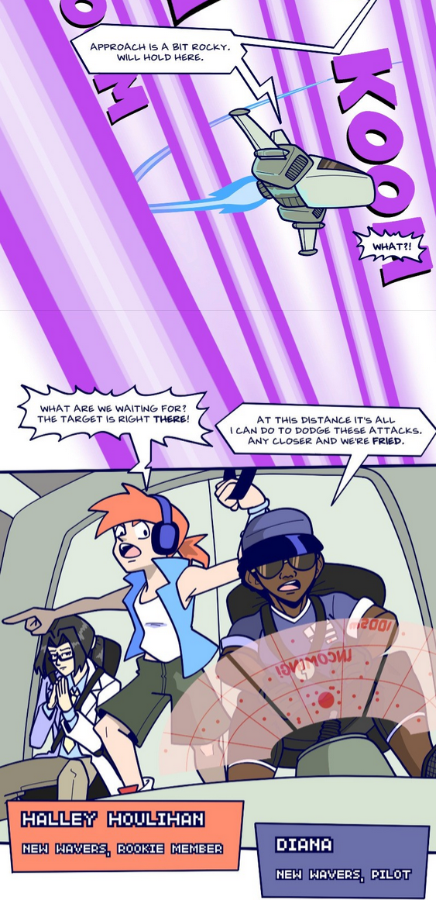
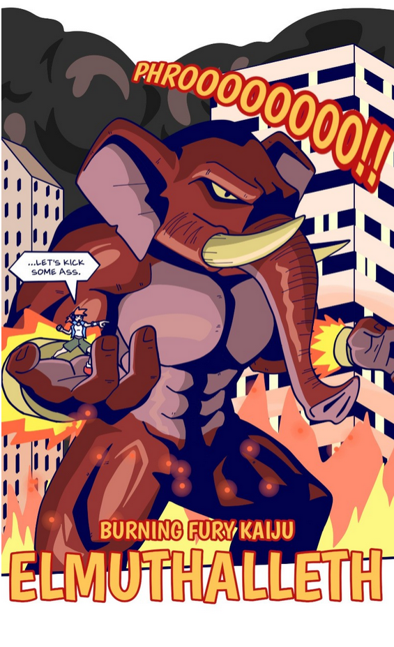
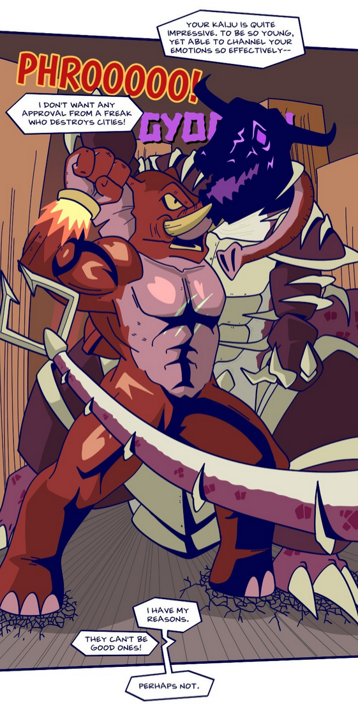
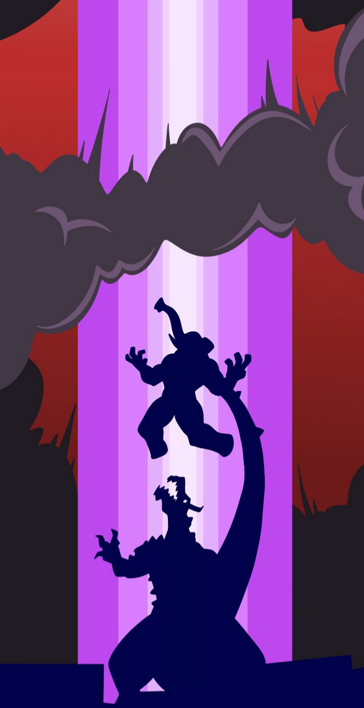

The Witching Hours Are 9 to 5
My currently most active comic project, an urban fantasy action dramedy about a brother and sister who work as paranormal investigators. I started making it as a "warmup project," just something where I could make the pages quick and dirty to get myself ready for "real" work, but I quickly ended up caring about it too much for my own good. I still try to carry on the fast and loose spirit, but I take a little more time on the art now.
Currently active! You can read it on its dedicated website or on Webtoon.

Corpse Worm
My first attempt at a solo comic, a dark fantasy action/comedy/horror about a young creature (a worm that puppeteers a dead body) on the run from the law when he suddenly gains mysterious powers. Think of it like a road trip starring a bunch of classic movie monsters who have shonen-style battles along the way. Ran for almost 300 pages but is now inactive because after six years I no longer felt the same way I did when I started it.
Dead, but you can read all of it on its website.
   
Ginormous
My experiment with vertical scroll comics, a Saturday morning cartoon-inspired battle comic about kids who summon giant monsters to fight evil in a futuristic metropolis. I originally created it for a contest entry in 2022, and am currently trying to decide what I want to do with it.
Currently inactive, but you can read the pilot episode on Webtoon.
   